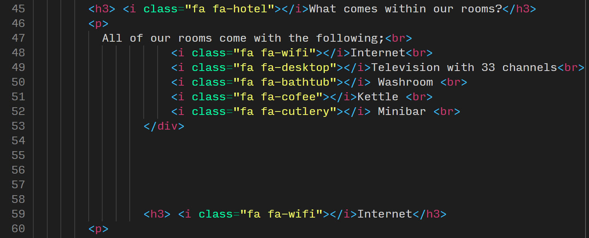
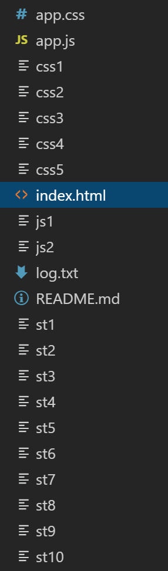
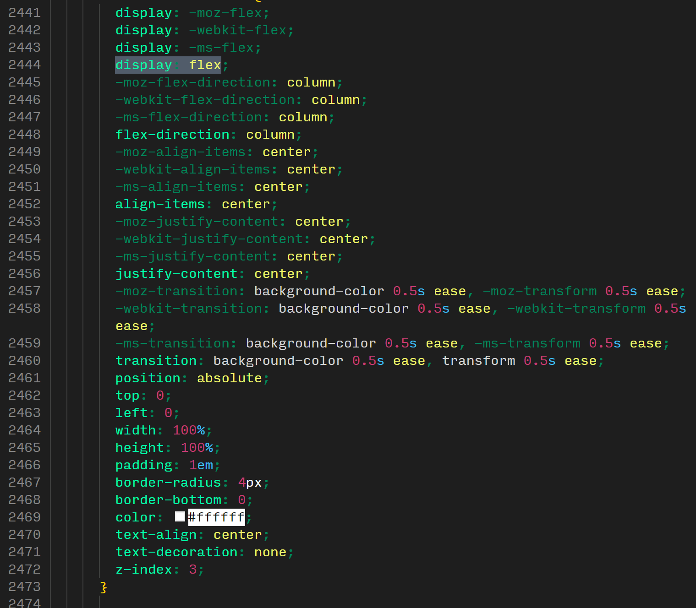

Here are some examples of the kind of work students have produced in previous years. They're in rough categories so you get an idea of how these websites were marked.
Overall stats:
pass-rate was 96%
average grade was 64%
about 40% had firsts
This document is organised in order of the marking criteria and shows examples of each of the three categories ("not addressed", "partially addressed", and "fully addressed") for each of the points (if suitable).
Shortcuts:
Screenshots of overall design
Here are some examples of student work from the previous two years, with a rough idea of how they were marked overall.
Please note that this only shows how the pages look, it doesn't show any animations or hover effects, and most of all it does not show the quality of the code. So some of the pages are marked higher or lower overall perhaps than you might expect due to underlying issues with the code. This includes for example API calls that bring in content dynamically from external sources which might not be clear from simply looking at the final design of the website.
Try and fix any errors and address warnings that are raised by the validator. Mostly this will catch serious syntax errors but it also points the way to good practice in general.
For the HTML validation, errors must be avoided completely to get "partially" or "fully addressed". Warnings are less severe but you should still try to address them.
Depending on the amount of CSS errors you have you might still get "partially addressed" if they are minor (or for example are to do with browser compatibility). Again warnings are less severe but you should still try to address them.
many errors in both HTML and CSS
not addressed
very few errors in either
partially addressed
no errors in HTML or CSS
fully addressed
1.2. Consistent code nesting and indentation (2 spaces is industry-standard)
If you are unsure about your indentation practice you can use a beautifier to indent your code for you (yes, we are essentially giving away marks here)! See links below:
not addressed

not addressedpartially addressedfully addressed
1.3. Separate .css and .js files (e.g. no "style=" or "onclick" in HTML)
This is largely marked on amount of inline logic in the HTML. So for instance one occurance of "onclick" or a "width" declaration inside an <img> tag would be considered "partially addressed". Several instances of this would be "not addressed" and of course no inline styles or scripts would be "fully addressed".
The examples below are taken out of context of the whole repository so I can't really show the grading element for these fairly. Suffice to say inline styles and scripts like these should not happen ever.
depends on overall number
note missing video tag instead of div, inline styles ("align" marked in red), spaces between attributes and values (e.g. class = "VideoEmbed" instead of class="VideoEmbed"), inline JS (onclick instead of eventListener)
not addressed
note excessive use of onclick, inline styles, the div with class "tab" should simply be a <nav> tag, the section with class "mainbody" should be a <main> tag
depends on overall number
note the setting of background colour inline and also the div with class "Header" should be a <header> tag, and the <b> tag should be a <strong> tag instead
depends on overall number
note line 51 shows a syntax error of a tag without a name just a class, indentation is bad, and contains inline CSS styles for the image
1.4. Use of CSS3 features e.g. flexbox, animations, CSS grid
This largely depends on the number and quality of examples found in the code.
no CSS3 use
not addressed
only very basic CSS in general and no CSS3 features used at all, or very buggy or pointless (e.g. just slapping a display: flex on a random element with no effect
basic CSS3 use
partially addressed
some attempts at using CSS3 features such as flexbox and animations but maybe slightly buggy or redundant, maybe contains an animation but includes lots of redundant vendor pre-fixes (e.g. "-webkit")
advanced CSS3 use
fully addressed
good use of flexbox and or grids for layout, and/or good use of animations (e.g. rotating icons on hover, responsive grid layout, etc)
1.5. Tidy file and folder organisation with lower-case names
This should be fairly self-explanatory. Keep file and folder names lower-case and don't include any spaces or underscores (use hyphens if necessary). We normally expect you to keep your images, CSS, and JS files in a separate folder each. Don't include any unused files you used during development. Clean the repository for your final commit. Your main homepage must be called "index.html". This is necessary for GitHub Pages to work and most web servers too.
not addressed

not addressednot addressedpartially addressedpartially addressedfully addressedfully addressedfully addressed
2. JavaScript, APIs & JSON
Please note that you should only use native code e.g. no JQuery, Bootstrap, etc. External assets such as images, FontAwesome icons and Google fonts are acceptable.
2.1. No JavaScript errors in the browser console
This largely depends on the number of instances found in the console and the severity of the errors. Errors that break functionality are worse than warnings for example.
It may be a good idea to include console.log() statements for debugging purposes. Remove them if things work out, or if not then leave them in to show your attempt of fixing them. Please also note that you should remove any console.log() statements before your site goes live as it is considered bad practice.
Warnings can often be ignored as they're browser related, e.g. ad-block.
several errors or no errors but no JS
not addressed
this might include errors that could be easily fixed, not linking files properly (e.g. typos, wrong paths or wrong file names) and cases were there are no errors but no JS was used at all
some errors with clear attempts of fixing them
partially addressed
this applies if we can see that you've tried to fix the errors either by using console.log() statements or comments in the code
no errors
fully addressed
note that this only applies if a decent amount of "handwritten" JavaScript was used; if all you've done is copy and paste some Google maps script then we can't give you full marks for not having errors
2.2. Use of JavaScript for DOM manipulation and/or interaction
This largely depends on how JS was used. The point of this crtieria is for you to use JS to manipluate some content on the HTML page, for instance feedback of user input from a form (e.g. user enters name, name gets printed into a paragraph on the page). An alert box does not really count as "DOM manipulation" so would get "not addressed".
This also includes "tabbed" layouts that dynamically show or hide content and hamburger mobile menus that are shown or hidden via JS.
Please not that PHP scripts for contact forms are unmarked - we will ignore them completely. It's not going to affect your mark to have a non-functional contact form.
no JavaScript used or very basic copy & paste code only
not addressed
Google maps with minimal customisation (e.g. coords) does not count towards this or very basic attempts of including JS such as a single alert() statement
basic use of DOM manipulation
partially addressed
not fully functional perhaps due to some errors or very simple (e.g. basic innerHTML use)
advanced use of DOM manipulation
fully addressed
more than one instance of DOM manipulation or more advanced changes such as styling (not just content) (e.g. this document uses conditional colouring of figure captions, see scripts.js)
2.3. ES6 syntax: e.g. "let" and "const" over "var", template literals, arrow functions
no ES6 use
not addressed
code full of var and standard string concatenation (e.g. 'hello ' + name + '!' instead of `hello ${name}!`), maybe even some JQuery
some use of ES6 features but not consistently
partially addressed
inconsistent use, maybe even some JQuery
advanced and consistent use of ES6
fully addressed
ES6 features used throughout and consistently, if no JS was used at all or very little you are not automatically getting full marks for one single instance of let, you have to show proficiency
2.4. Use of JavaScript to handle data (e.g. JSON from an external API)
As mentioned briefly above in point 2.2 using a Google map in not technically handling JSON data via an API, so this might only get you "partially addressed" (depends on how much you customise the map for instance).
There are many services out there with APIs related to images, news, weather, videos, Wikipedia, translations, maps, etc.
The use of the Google Fonts API or embedded YouTube videos, or Twitter "widgets" do not count towards this point.
Although Google maps is used in the examples below it is not compulsory.
no API or JSON use
not addressed
very basic Google map, possible as a inline script and with errors
basic API and JSON use
partially addressed
well customised Google map, some other basic API use
advanced API and JSON use
fully addressed
advanced API calls to get JSON data and display it on the page (e.g. populate an image gallery, change background image accroding to current weather, query Wikipedia and display top 3 results and related news articles from the Guardian, etc.
2.5. DRY code e.g. no repeated similar functions without parameters
3. Responsiveness, Accessibility and Interaction
3.1. Responsive at any size with mobile-first CSS breakpoints
3.2. Well-ordered information architecture, ease of navigation at all sizes
decent amount of commits although many on the day before the deadline, poor commit messages, note also some experiment with a branch but only to update readme
excellent number of commits spread over time, very good commit messages, note also excellent use of branching for feature development
4.1. Source code and live site on GitHub Pages
This should be "fully addressed" for all of you if you've managed to set up your GitHub Classroom repo properly and enables GitHub Pages in the settings. This is really only for some cases were students simply haven't followed these instructions at all and end up submitting a zip file via email (yes, we've seen it all).
4.2. Use of GIT branches for feature development
Branches are slightly more advanced feature of git. They should normally be used for feature development (e.g. a new JavaScript feature, or a re-design half way through).
"Partially addressed" would be given if there's been some experiments with branches but perhaps incorrectly (e.g. not actually merged back into the master branch, or a branch for a single change in the readme just for the sake of using a branch last minute).
"Fully addressed" would be given to any amount of branches that are sensible.
There isn't a set amount of commits you have to create in order to get "partially" or "fully addressed" here. It is possible to get full marks for this component if you have ten excellent commits, with very good commit messages spread out over a decent period to show progress.
Here's an excellent resource on this topic in general:
Look at the examples above to get an idea of what would be considered bad, good, and excellent commit messages.
Normally, you should use imperative mood to write your messages, for example "add readme file" instead of "added readme file". Read this excellent resource on this if you'd like to know more:
The content of your readme is very individual and depends on your site, the issues you've faced, etc. But at the very least you should include references here to any external sources you've used (e.g. images, text content, embeded videos, API code, code examples from CodePen, W3Schools or other sources, etc.) Note that this does not have to be in Harvard referencing format but could simply be a url with a short description of what it was used for, for example:
# References
- image gallery code taken from [here](https://link.url)
- Google maps code taken from [here](https://link.url)
The beauty of GitHub is that if your readme file is named and formatted correctly (and at the root of your repo, i.e. not in a sub-directory) then GitHub will automatically display it nicely on your repo website as shown below.
General Issues
redundant class
really no need to add a class to the table data tags, just style them directly
lots of redundat code
note the strange indentation (probably tabs rather than spaces used), the amount of reduncant code (e.g. the menu div is completely unnecessary) often the HTML tag can be styled directly without a class or id. no real need to make the menu a <ul> either.
messy
note inconsistent indentation, the inline styles at the top, inline script in the middle (although fairly well commented), and the <br> tags at the bottom for layout (you should use CSS to pad things out)
messy
note the "max-width" and "width" inline styles at the top, and inline script below (although fairly well commented)

out-of-date
note the vendor prefixes (-webkit, -moz, -ms) which are not needed since flexbox and transitions are supported in all browsers